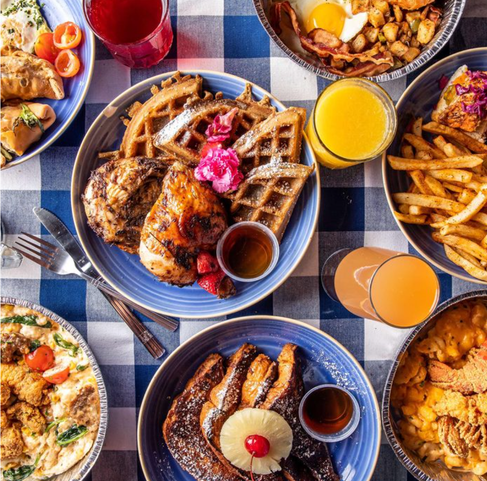
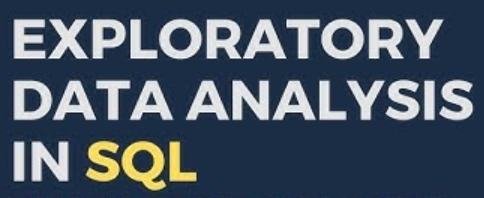
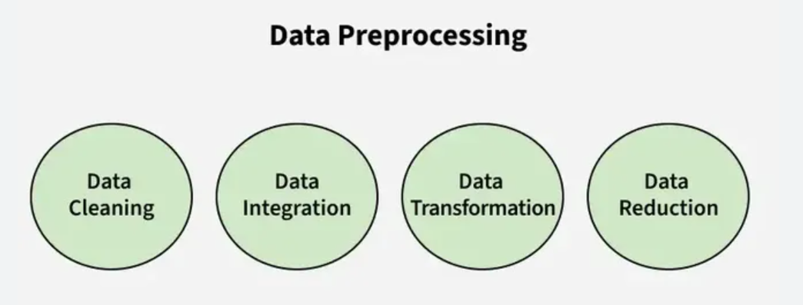
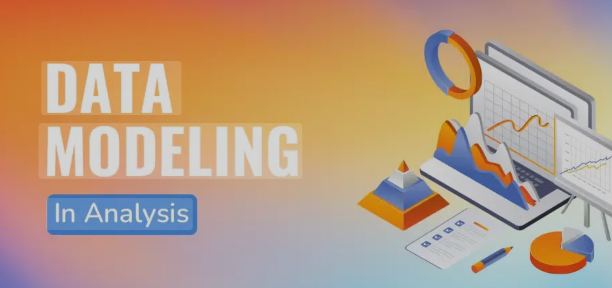
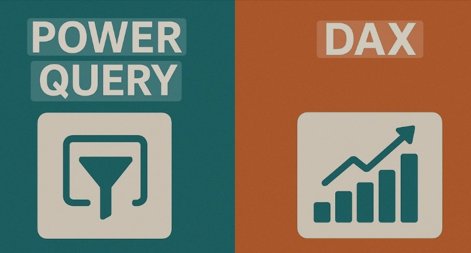
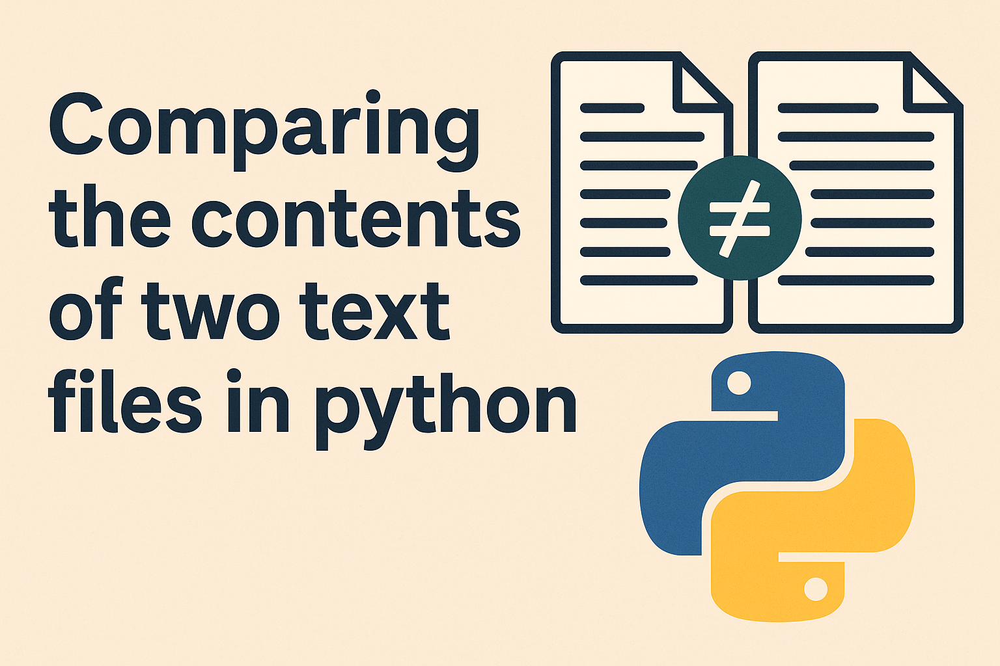

Retail Sales Analysis in SQL
Project Description:
This project demonstrates my ability to setup the database , data cleaning, exploratory data analysis, and business-driven SQL queries. The findings from this project can help drive business decisions by understanding sales patterns, customer behavior, and product performance.
Library Management System in SQL
Project Description:
This project demonstrates the implementation of a Library Management System using SQL. It includes creating and managing tables, performing CRUD operations and executing advanced sql queries. The goal is to showcase skills in database design, manipulation and querying.
Restaurant Order Analysis in MySql

Project Description:
This project focuses on analyzing transactional restaurant data to uncover insights about menu performance and customer preferences. Using the order_details and menu_items tables, the goal is to understand which dishes are most popular, which items underperform, and what patterns emerge from top-spending or frequent customers.
Project Description:
The Data Entry Form in Excel project aims to simplify and streamline the process of entering data into spreadsheets.
Traditionally, users manually navigate through rows and columns to input information, which can be time-consuming and prone to errors. This project introduces a user-friendly Data Entry Form that automates and improves the efficiency of data input.
Exploratory Data Analysis in SQL

Project Description:
This project aims to perform an Exploratory Data Analysis (EDA) on two datasets — CovidDeaths and CovidVaccination — stored in the SqlDataExplore database. The goal is to explore, clean, and analyze global COVID-19 data to uncover patterns, trends, and insights related to the pandemic’s progression and the impact of vaccination efforts.
The CovidDeaths dataset contains information on COVID-19 cases, deaths, population, and related statistics across countries and dates, while the CovidVaccination dataset includes data on vaccination progress, such as total vaccinations, people vaccinated, and vaccination rates.
Skills used: Joins, CTE's, Temp Tables, Windows Functions, Aggregate Functions, Creating Views, Converting Data Types

Project Description:
This project focuses on preparing raw data for accurate and effective modeling by performing comprehensive data cleaning and preprocessing tasks. The goal is to ensure data quality, consistency, and reliability for subsequent analytical or machine learning processes.
Key steps include identifying and handling missing values, correcting inconsistencies, standardizing formats, removing duplicates, and validating data types. Through these processes, the dataset will be transformed into a well-structured, accurate, and consistent form, suitable for exploratory analysis and predictive modeling.
The outcome of this project is a clean, organized dataset that enhances model performance, improves interpretability, and ensures trustworthy insights.

This excercise demonstrates my data modeling skills by importing data from multiple sources and creating relationships between them to enable effective analysis.

Project Description: In this project, I demonstrated my proficiency in using Power Query within Excel for data transformation and analysis. I created calculated columns, developed measures, and built a comprehensive Date table to support time-based analysis. These steps streamlined data preparation and enhanced the accuracy and efficiency of analytical reporting.

Project Description: In this project, I created two text files containing lists of items and developed a Python program to compare their contents. The script identifies similarities and differences between the two files, demonstrating how to efficiently handle file reading, comparison, and data processing in Python.